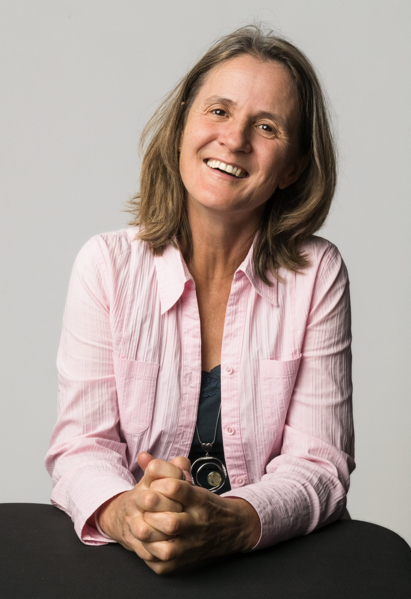

KONTAKT & GESPRÄCH VEREINBAREN · HÄRKINGEN, OENSINGEN & ONLINE
Ihr direkter Draht zu Anne-Katrin Koch.
Schreiben Sie mir, rufen Sie mich an oder starten Sie rechts den geführten 3-Schritte Smart-Anfrage-Assistenten. Alle Anfragen werden absolut vertraulich behandelt und persönlich von mir beantwortet.

Praxis für Paartherapie & Einzelberatung
Herzensarbeit · Anne-Katrin Koch
Usserdorf 24 · CH-4624 Härkingen (SO) · Direkt am Autobahnkreuz A1/A2
Direktkontakt (Telefon, WhatsApp, SMS & E-Mail)
Anne-Katrin Koch (Inhaberin · Seit 2009 in eigener Praxis)
Tel. / WhatsApp: +41 79 103 63 31 · E-Mail: a.koch@herzensarbeit.ch
Frauen-Workshops «Kraftvoll Frau sein»
Gemeinschaftspraxis Oensingen (Samstag 10:00–17:00 Uhr)
Dünnernstrasse 2 · CH-4702 Oensingen (SO) · Kleingruppe 4–12 Frauen
Online-Beratung & Bewertungen
Video-Sitzungen auf Deutsch & Englisch
provenexpert.com/herzensarbeit-anne-katrin-koch
3-SCHRITTE SMART-ANFRAGE · HERZENSARBEIT.CH
1. Worum geht es bei Ihrem Anliegen?
1
Worum geht es?
2
Rahmen & Fokus
3
Kontakt & Dossier
Anfrage & 1-Seiten-PDF-Dossier erfolgreich erstellt
1-Seiten-PDF-Dossier bereit zum Download
Zuständige Ansprechpartnerin (Praxis Härkingen):
Anne-Katrin Koch
Verbindliches Rückmelde-Fenster:
Persönliche Rückmeldung
Generierte WhatsApp- & E-Mail-Zusammenfassung:
Anfrage-Zusammenfassung wird geladen...